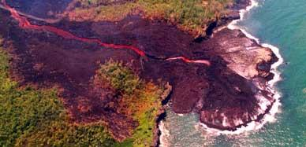

Le spectacle est suffisamment exceptionnel pour figurer en ajout du mois de janvier. l’éruption du volcan le 5 janvier près de Sainte Rose a semblé se calmer quelques six jours après. Mais voilà que le volcan reprenait un petit peu plus à l’est, une activité beaucoup plus intense le 13 janvier. Le lendemain, une énorme coulée de lave traversait la route au niveau de la Vierge au parasol et s’enfonçait dans la mer dans un concert infernal orchestré par une colonne de vapeur et les remous de la lave qui redevient roche. Les complication commencent avec la crainte d’une éruption hors enclos. Les 800 habitants du village de Bois-Blanc ont du être évacués.

Tous les sites réunionnais crépitent et ajoutent de splendides photos au fur et à mesure du chassé-croisé des photographes sur les flancs du Piton de la Fournaise. L’agence IP Réunion propose un diaporama complet, Clicanoo reprend ces photos et couvre l’évènement de plusieurs articles. le margouillat (aujourd’hui disparu), wanadoo, dijoux.net, RUNnet y publient aussi leurs articles, photos, et vidéos.
Voyez ma selection d’articles du web sur l’éruption avec plein de photos exceptionnelles.